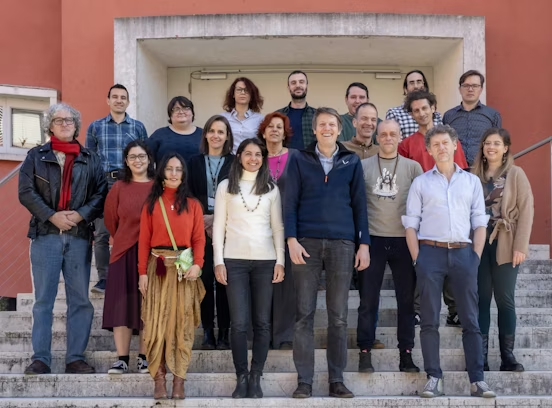

The CRIMA consortium's paper, "CRIMA: Towards a Framework Integrating Earth Observation and Semantic Technologies for Multi-hazard Climate Risk Assessment", has been published in the Springer proceedings of ICONREM 2026.
The publication introduces CRIMA's approach to integrating Earth Observation data, semantic technologies, and knowledge-based representations of climate risks. It outlines the project's interdisciplinary framework for connecting scientific knowledge with quantitative data to support multi-hazard risk assessment and adaptation planning.
Read the paper in the Springer proceedings
The CRIMA project team met with a representative of Bolzano Civil Protection to discuss local climate risk management needs and explore potential applications of the project's decision-support framework.
The meeting provided an opportunity to exchange perspectives on the use of Earth Observation data, semantic technologies, and integrated environmental information to support climate risk assessment and decision-making. This stakeholder engagement contributes to aligning CRIMA's technical development with the practical needs of regional authorities and its planned Alpine use cases.
Research on integrating Virtual Knowledge Graphs with Earth Observation data was disseminated at DL 2026, the International Workshop on Description Logics, held in Lisbon, Portugal.
The extended abstract "ontopEO: VKGs over Earth Observation Data" describes an approach to accessing and querying Earth Observation data through semantic technologies. This research is closely aligned with CRIMA's development of a Virtual Knowledge Graph connecting environmental information, semantic models, and Earth Observation processing services.
Eurac Research presented CRIMA at the International Conference on Resilience, Multi-Risk Assessment and Monitoring (ICONREM 2026), held in Florence, Italy.
The conference provided an opportunity to introduce the project to the international research community, exchange perspectives on multi-hazard risk and resilience, and highlight CRIMA's ongoing work and its relevance to climate adaptation and risk management.
Researchers from the Free University of Bozen-Bolzano and Eurac Research contributed to the 34th Symposium on Advanced Database Systems (SEBD 2026) in Senigallia, Italy.
Their contribution, "Virtual Knowledge Graphs over Earth Observation Data", was included in the conference's Knowledge Graphs and Semantic Analysis session. The work explores semantic access to Earth Observation data, a key component of the CRIMA system architecture.
Research from the Free University of Bozen-Bolzano on semantic access to Earth Observation data was published in the proceedings of the International Semantic Web Conference (ISWC 2025), held in Nara, Japan.
The paper explores the use of Virtual Knowledge Graph technologies to make Earth Observation data more accessible through semantic queries. This research provides a relevant technical foundation for CRIMA's integration of semantic knowledge representations with Earth Observation data services.

The CRIMA project officially kicked off at Eurac Research HQ in Bolzano, bringing together representatives from all partner institutions. The launch meeting marked the beginning of this three-year collaboration to advance climate risk assessment by integrating AI, semantic technologies, and Earth Observation data.
During the meeting, partners aligned on technical goals, discussed system architecture, and defined a roadmap for development. The project will develop and refine an integrated decision-support system, which will subsequently be validated through two Alpine use cases addressing hydrometeorological hazards and long-term water scarcity risks.